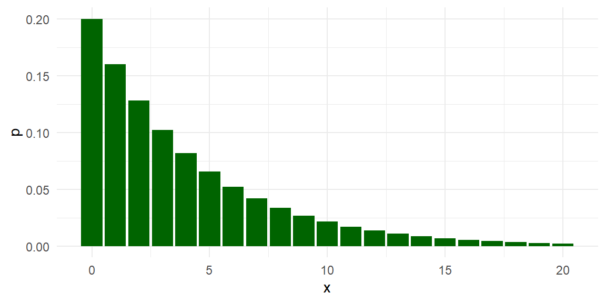
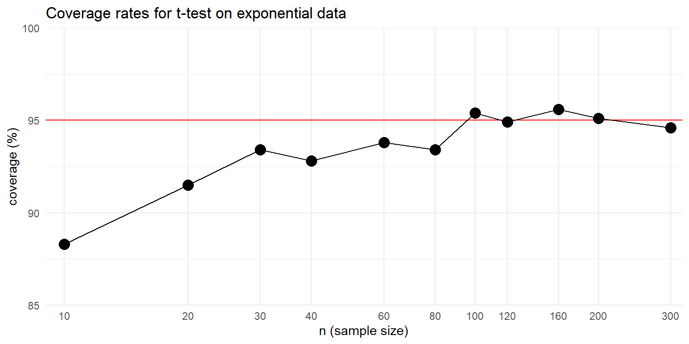

To begin learning about simulation, a good starting place is to examine a small, concrete example. This example illustrates how simulation involves replicating the data-generating and data-analysis processes, followed by aggregating the results across replications. Our little example encapsulates the bulk of our approach to Monte Carlo simulation, touching on all the main components involved. In subsequent chapters we will look at each of these components in greater detail. But first, let us look at a simulation of a very simple statistical problem.
The one-sample \(t\)-test is one of the most basic methods in the statistics literature. It tests a null hypothesis that a population mean of some variable is equal to a specific value by comparing the mean of a sample of data to the hypothesized value. If the sample average is discrepant (very different) from the null value, relative to how uncertain we are about our estimate, then the hypothesis is rejected. The test can also be used to generate a confidence interval for the population mean. If the sample consists of independent observations and the variable is normally distributed in the population, then the confidence interval will have exact coverage, in the sense that 95% intervals will include the population mean in 95 out of 100 tries. But what if the population variable is not normally distributed?
To find out, let us look at the coverage of the \(t\)-test’s 95% confidence interval for the population mean when the method’s normality assumption is violated. Coverage is the chance of a confidence interval capturing the true parameter value. To examine coverage, we will simulate many samples from a non-normal population with a specified mean, calculate a confidence interval based on each sample, and see how many of the confidence intervals cover the known true population mean.
Before getting to the simulation, let’s look at the data-analysis procedure we will be investigating. Here is the result of conducting a \(t\)-test on some fake data, generated from a normal distribution:
# make fake datadat <-rnorm( n =10, mean =4, sd =2 )# conduct the testtt <-t.test( dat )tt
One Sample t-test
data: dat
t = 6.0878, df = 9, p-value = 0.0001819
alternative hypothesis: true mean is not equal to 0
95 percent confidence interval:
2.164025 4.723248
sample estimates:
mean of x
3.443636
We generated data with a true (population) mean of 4. Did we capture it? To check, we can use the findInterval() function, which checks to see where the first number lies relative to the range given in the second argument. Here is an illustration of the syntax:
findInterval( 1, c(20, 30) )
[1] 0
findInterval( 25, c(20, 30) )
[1] 1
findInterval( 40, c(20, 30) )
[1] 2
The findInterval() returns a 1 if the value of the first argument value is in the interval specified in the second argument.
We can apply it to check whether our estimated CI covers the true population mean:
findInterval( 4, tt$conf.int )
[1] 1
In this instance, findInterval() is equal to 1, which means our CI captured the true population mean of 4.
Here is the full code for simulating data, computing the data-analysis procedure, and evaluating the result:
# make fake datadat <-rnorm( n =10, mean =4, sd =2 )# conduct the testtt <-t.test( dat )# evaluate the resultsfindInterval( 4, tt$conf.int ) ==1
[1] TRUE
The above code captures the basic form of a single simulation trial: make the data, analyze the data, decide how well we did. The code also illustrates a good way to figure out the details of a simulation: start by figuring out what a single iteration of the simulation might look like. Starting by mucking about this way also allows us to test and develop our code in an interactive, exploratory fashion. For instance, we can play with findInterval() to figure out how to use it to determine whether our confidence interval captured the truth. Once we have arrived at working code for a single iteration, we are in a good position to start writing functions to implement the actual simulation. For now, we have generated data from a normal distribution; we will later revise the code to generate data from a non-normal population distribution.
3.1 Simulating a single scenario
We can estimate the coverage of the confidence interval by repeating the above data-generating and data-analysis processes many, many times. R’s replicate() function is a handy way to repeatedly call a line of code. Its first input argument is n, the number of times to repeat the calculation, followed by expr, which is one or more lines of code to be called. We can use replicate to repeat our simulation process 1000 times in a row, each time generating a new sample of 10 observations from a normal distribution with mean of 4 and a standard deviation of 2. For each replication, we store the result of using findInterval() to check whether the confidence interval includes the population mean of 4.
rps <-replicate( 1000, { dat <-rnorm( n =10, mean =4, sd =2 ) tt <-t.test( dat )findInterval( 4, tt$conf.int )})head(rps, 20)
[1] 1 1 1 1 1 1 2 1 1 1 1 1 1 1 1 1 1 1 1 1
To see how well we did, we can look at a table of the results stored in rps and calculate the proportion of replications that the interval covered the population mean:
table( rps )
rps
0 1 2
27 957 16
mean( rps ==1 )
[1] 0.957
We got about 95% coverage, which is good news. In 27 out of the 1000 replications, the interval was too high (so the population mean was below the interval) and in 16 out of the 1000 replications, the interval was too low (so the population mean was above the interval).
It is important to recognize that this set of simulations results, and our coverage rate of 95.7%, itself has some uncertainty in it. Because we only repeated the simulation 1000 times, what we really have is a sample of 1000 independent replications, out of an infinite number of possible simulation runs. Our coverage of 95.7% is an estimate of what the true coverage would be, if we ran more and more replications. The source of uncertainty of our estimate is called Monte Carlo simulation error (MCSE). We can actually assess the Monte Carlo simulation error in our simulation results using standard statistical procedures for independent and identically distributed data. Here we use a proportion test to check whether the estimated coverage rate is consistent with a true coverage rate of 95%:
covered <-as.numeric( rps ==1 )prop.test( sum(covered), length(covered), p =0.95 )
1-sample proportions test with continuity correction
data: sum(covered) out of length(covered), null probability 0.95
X-squared = 0.88947, df = 1, p-value = 0.3456
alternative hypothesis: true p is not equal to 0.95
95 percent confidence interval:
0.9420144 0.9683505
sample estimates:
p
0.957
The test indicates that our estimate is consistent with the possibility that the true coverage rate is 95%, just as it should be. Things working out should hardly be surprising. Mathematical theory tells us that the \(t\)-test is exact for normally distributed population variables, and we generated data from a normal distribution. In other words, all we have found so far is that the confidence intervals follow theory when the assumptions of the method are met.
3.2 A non-normal population distribution
To see what happens when the normality assumption is violated, let us now look at a scenario where the population variable follows a geometric distribution. The geometric distribution is usually written in terms of a probability parameter \(p\), so that the distribution has a mean of \((1 - p) / p\). We will use a geometric distribution with a mean of 4 by setting \(p = 1/5\). Here is the population distribution of the variable:

The distribution is highly right-skewed, which suggests that the normal confidence interval might not work very well.
Now let’s revise our previous simulation code to use the geometric distribution:
rps <-replicate( 1000, { dat <-rgeom( n =10, prob =1/5 ) tt <-t.test( dat )findInterval( 4, tt$conf.int )})table( rps )
rps
0 1 2
8 892 100
Our confidence interval is often entirely too low (such that the population mean is above the interval) and very rarely does our interval fall fully above the population mean. Furthermore, our coverage rate is not the desired 95%:
mean( rps ==1 )
[1] 0.892
To take account of Monte Carlo error, we will again do a proportion test. The following test result calculates a confidence interval for the true coverage rate under the scenario we are examining:
covered <-as.numeric( rps ==1 )prop.test( sum(covered), length(covered), p =0.95)
1-sample proportions test with continuity correction
data: sum(covered) out of length(covered), null probability 0.95
X-squared = 69.605, df = 1, p-value < 2.2e-16
alternative hypothesis: true p is not equal to 0.95
95 percent confidence interval:
0.8707042 0.9102180
sample estimates:
p
0.892
Our coverage is too low; the confidence interval based on the \(t\)-test misses the the true value more often than it should. We have learned that the \(t\)-test can fail when applied to non-normal (skewed) data.
3.3 Simulating across different scenarios
So far, we have looked at coverage rates of the confidence interval under a single, specific scenario, with a sample size of 10, a population mean of 4, and a geometrically distributed variable. We know from statistical theory (specifically, the central limit theorem) that the confidence interval should work better if the sample size is big enough. But how big does it have to get? One way to examine this question is to expand the simulation to look at several different scenarios involving different sample sizes. We can think of this as a one-factor experiment, where we manipulate sample size and use simulation to estimate how confidence interval coverage rates change.
To implement such an experiment, we first write our own function that executes the full simulation process for a given sample size:
ttest_CI_experiment =function( n ) { rps <-replicate( 1000, { dat <-rgeom( n = n, prob =1/5 ) # simulate data tt <-t.test( dat ) # analyze datafindInterval( 4, tt$conf.int ) # evaluate coverage }) coverage <-mean( rps ==1 ) # summarize resultsreturn(coverage)}
The code inside the body of the function is identical to what we have used above, with the sample size as a function argument, n, which enables us to easily run the code for different sample sizes. With our function in hand, we can now run the simulation for a single scenario just by calling it:
ttest_CI_experiment(n =10)
[1] 0.885
Even though the sample size is still n = 10, the simulated coverage rate is a little bit different from what we found previously. That is because there is some Monte Carlo error in each simulated coverage rate.
Our task is now to use this function for several different values of \(n\). We could just do this by copy-pasting and changing the value of n:
ttest_CI_experiment(n =10)
[1] 0.922
ttest_CI_experiment(n =20)
[1] 0.91
ttest_CI_experiment(n =30)
[1] 0.914
However, this will quickly get cumbersome if we want to evaluate many different sample sizes. A better approach is to use a mapping function from the purrr package.1 The map_dbl() function takes a list of values and calls a function for each value in the list. This accomplishes the same thing as using a for loop to iterate through a list of items (if you happen to be familiar with these), but is more succinct.
To proceed, we first create a list of sample sizes to test out:
Now we can use map_dbl() to evaluate the coverage rate for each sample size:
coverage_est <-map_dbl( ns, ttest_CI_experiment)
This code will run our experiment for each value in ns, and then return a vector of the estimated coverage rates for each of the sample sizes.
We advocate for depicting simulation results graphically. To do so, we store the simulation results in a dataset and then create a line plot using a log scale for the horizontal axis:
res <-tibble( n = ns, coverage =100* coverage_est )ggplot( res, aes( x = n, y = coverage ) ) +geom_hline( yintercept=95, col="red" ) +# A reference line for nominal coverage rategeom_line() +geom_point( size =4 ) +scale_x_log10( breaks = ns, minor_breaks =NULL) +labs( title="Coverage rates for t-test on exponential data",x ="n (sample size)", y ="coverage (%)" ) +coord_cartesian(xlim =c(9,320), ylim=c(85,100), expand =FALSE) +theme_minimal()

We can see from the graph that the confidence interval’s coverage rate improves as sample size gets larger. For sample sizes over 100, the interval appears to have coverage quite close to the nominal 95% level. Although the general trend is pretty clear, the graph is still a bit messy because each point is an estimated coverage rate, with some Monte Carlo error baked in.
3.4 Extending the simulation design
So far, we have executed a simple simulation to assess how well a statistical method works in a given circumstance, then expanded the simulation by running a single-factor experiment in which we varied the sample size to see how the method’s performance changes. In our example, we found that coverage is below what it should be for small sample sizes, but improves for sample sizes in the 100’s.
This example captures all the major steps of a simulation study, which we outlined at the start of Chapter 1. We generated some hypothetical data according to a fully-specified data-generating process: we did both a normal distribution and a geometric distribution, each with a mean of 4. We applied a defined data-analysis procedure to the simulated data: we used a confidence interval based on the \(t\) distribution. We assessed how well the procedure worked across replications of the data-generating and data-analysis processes: in this case we focused on the coverage rate of the confidence interval. After creating a function to implement this whole process for a single scenario, we investigated how the performance of the confidence interval changed depending on sample size.
In simulations of more complex models and data-analysis methods, some or all of the steps in the process might have more moving pieces or entail more complex calculations. For instance, we might want to compare the performance of different approaches to calculating a confidence interval. We might also want to examine how coverage rates are affected by other aspects of the data-generating process, such as looking at different population mean values for the geometric distribution—or even entirely different distributions. With such additional layers of complexity, we will need to think systematically about each of the component parts of the simulation. In the next chapter, we introduce an abstract, general framework for simulations that is helpful for guiding simulation design and managing all the considerations involved.
Exercises
Exercise 3.1 The simulation function we developed in this chapter runs 1000 replications of the data-generating and data-analysis process, which leads to some Monte Carlo error in the reported results. Modify the ttest_CI_experiment() function to make the number of replications an input argument, then re-run the simulation and re-create the graph of the results with \(R=10,000\) or even \(R=100,000\). Is the graph more regular than the one in the text, above? Use your improved results to estimate what sample size would be large enough to give coverage of at least 94% (so only 1% off of desired). Is this answer much different from if you had used the figure given in the text?
Exercise 3.2 Modify the ttest_CI_experiment() function to make the \(p\) parameter an input argument. Repeat the one-factor simulation, but use \(p = 1/10\). Make sure your function is comparing coverage to the population mean of \((1 - p) / p\). How do the coverage rates change when \(p\) is so small?
Exercise 3.3 Below is a partially completed modified version of the ttest_CI_experiment() function that should create a tibble that includes the estimated coverage rate, the average interval length, and a confidence interval for the coverage rate:
ttest_CI_experiment_full =function( n ) { lotsa_CIs <-replicate( 1000, {# simulate data dat <-rgeom( n = n, prob =1/5) # analyze data tt <-t.test( dat ) # return CItibble(lower = tt$conf.int[1], upper = tt$conf.int[2]) }, simplify =FALSE ) %>%bind_rows()# summarize results# <calculate coverage># <calculate average interval length># <calculate a 95% confidence interval for the true coverage rate>return(coverage)}
Complete the function by writing code to compute the estimated coverage rate and average confidence interval length. Also calculate a 95% confidence interval for the true coverage rate (you can use prop.test() on your set of simulation coverage indicators to obtain this, treating your \(R\) simulation replicates as a random sample in its own right). This confidence interval captures what we call Monte Carlo error, which will depend on the number of simulation trials you run. Your modified function should return a one-row tibble with the coverage rate, average confidence interval length, and the lower and upper limits of a CI for the true coverage rate.
Exercise 3.4 Using your work from Exercise 3.3, re-run the simulations to obtain a data frame with each row being a simulation scenario and columns of sample size, estimated coverage, low end of the estimate’s confidence interval, high end of the interval, and average confidence interval length. You will likely want to use map() and then bind_rows() on your list of results; see Section 8.1 for more information about these techniques. Use your resulting set of results to create a graph that depicts the estimated coverage rates as a function of sample size. Make your graph include the 95% confidence intervals also, so that the Monte Carlo simulation error in the estimated coverage rates is represented in the graph. We recommend using the ggplot2 function geom_pointrange() to plot the confidence intervals.
Exercise 3.5 Modify ttest_CI_experiment() so that the user can specify the population mean of the data-generating process. Also let the user specify the number of replications to use. Here is a function skeleton to use as a starting point:
ttest_CI_experiment <-function( n, pop_mean, reps) { pop_prob <-1/ (pop_mean +1)# <fill in the rest>return(coverage)}
Exercise 3.6 Using the modified function from Exercise 3.5, implement a two-factor simulation study for several different values of n and several different population means. One way to do this is to run a few one-factor simulations, each with a different population mean. You can store them in a series of datasets, res1, res2, res3, etc. Then use bind_rows( size1 = res1, ..., .id = "mean" ) to combine the datasets into a single dataset. Make a plot of your results, with n on the x-axis, coverage on the \(y\)-axis, and different lines for different population means.
See Section 21.5 of R for Data Science (1st edition), which provides an introduction to mapping. Alternately, readers familiar with the *apply() family of functions from Base R might prefer to use lapply() or sapply(), which do essentially the same thing as purrr::map_dbl().↩︎